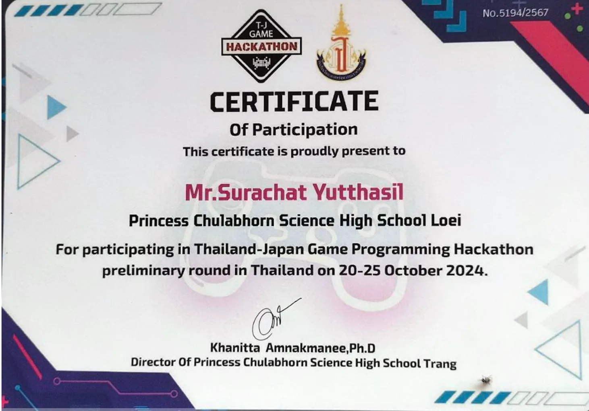
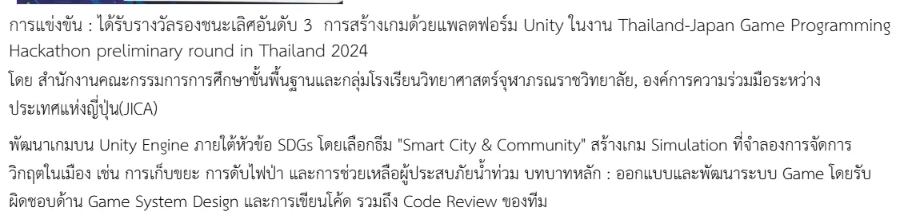

PROJECT 04 / GAME SYSTEMS
Smart City & Community
Simulation game จาก Thailand–Japan Game Programming Hackathon 2024
- ROLE
- TEAM MEMBER
- STATUS
- 3RD RUNNER-UP
- YEAR
- 2024
- FIELD
- GAME SYSTEMS

เกม Simulation บน Unity ภายใต้แนวคิด SDGs ให้ผู้เล่นจัดการวิกฤตในเมือง เช่น ขยะ ไฟป่า และน้ำท่วม โดยรับผิดชอบการออกแบบระบบเกม การเขียนโค้ด และ code review
CONTEXT / PROBLEM
ปัญหาที่เลือกทำ
ทีมต้องเปลี่ยนหัวข้อ Smart City & Community ให้กลายเป็นระบบเกมที่เข้าใจได้ภายในเวลาจำกัด ความท้าทายคือทำให้หลายเหตุการณ์เชื่อมกันโดยผู้เล่นยังเห็นผลของการตัดสินใจ
OWNERSHIP / CONTRIBUTION
ส่วนที่ผมรับผิดชอบ
ออกแบบและพัฒนาระบบเกม เขียนโค้ด และทำ code review ร่วมกับทีม
- 01ออกแบบ loop การเล่นและกติกาของเหตุการณ์ในเมือง
- 02พัฒนาระบบบน Unity และเชื่อมสถานะของเหตุการณ์
- 03ตรวจโค้ดร่วมกับทีมเพื่อลดปัญหาเมื่อนำระบบมารวมกัน
- 04ปรับขอบเขตงานให้ส่งต้นแบบได้ภายในเวลาการแข่งขัน
SYSTEM / PROCESS
ระบบและกระบวนการ
- 01SCOPE
เลือกเหตุการณ์ที่สื่อสาร SDGs ได้ชัดและทำได้ในเวลาจำกัด
- 02SYSTEM
กำหนด state, rule และผลกระทบของแต่ละเหตุการณ์
- 03BUILD
พัฒนาระบบบน Unity และรวมงานของสมาชิก
- 04REVIEW
ทดสอบ flow และตรวจโค้ดก่อนนำเสนอ
VALIDATION / WHAT THE EVIDENCE SAYS
สิ่งที่ยืนยันได้ในตอนนี้
ได้รับรางวัลรองชนะเลิศอันดับ 3 ในรอบ preliminary ประเทศไทย และมีเกียรติบัตรยืนยันการเข้าร่วม การแข่งขันจัดระหว่างวันที่ 20–25 ตุลาคม 2024
EVIDENCE TYPES
LIMITATIONS / NEXT QUESTIONS
ข้อจำกัดที่ไม่ซ่อน
- เป็นต้นแบบจากการแข่งขันภายใต้เวลาจำกัด
- ระบบถูกออกแบบเพื่อสื่อสารแนวคิด ไม่ใช่แบบจำลองเมืองเชิงวิทยาศาสตร์
- ผลงานเป็นงานทีม จึงระบุเฉพาะส่วนที่รับผิดชอบ
EVIDENCE / VISUAL RECORD
หลักฐานที่ใช้ตรวจสอบ
